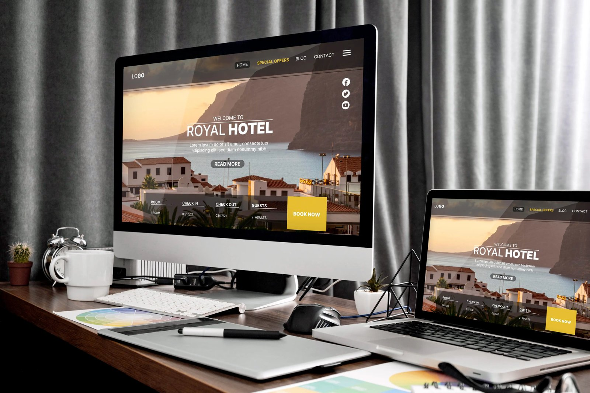

Melhores Websites para Aprender Design Web

O universo digital está em constante expansão, e a demanda por profissionais capazes de criar experiências visuais incríveis e funcionais nunca foi tão alta. Atualmente, qualquer negócio que queira sobreviver e crescer precisa de uma presença online forte, o que coloca o web designer em uma posição de grande destaque no mercado. Se você tem paixão por tecnologia, estética e resolução de problemas estruturais, entrar nesse mercado pode ser a decisão que transformará a sua vida profissional. A boa notícia é que o conhecimento técnico está totalmente democratizado. Conhecer os Melhores Websites para Aprender Design Web é o primeiro e mais importante passo para transformar sua curiosidade em uma profissão altamente valorizada e bem remunerada.
Neste artigo, vamos explorar de forma prática exatamente onde e como adquirir esse conhecimento. A ideia é otimizar seu tempo e seus recursos, focando no que realmente importa para a sua evolução no design digital.
O Ponto de Partida: Autodidatismo e Planejamento Estratégico
Com o mar de informações disponíveis na internet, muitas pessoas se perguntam como aprender web design de forma autodidata sem se sentir sobrecarregado. A resposta está na disciplina e, principalmente, na curadoria correta de conteúdos. Diferente do que acontecia há uma década, hoje a própria internet atua como um verdadeiro guia completo de web design para iniciantes, oferecendo trilhas de aprendizagem estruturadas que pegam o aluno do absoluto zero e o levam ao nível avançado.
Uma dúvida muito frequente que surge nessa fase inicial é: quanto tempo demora para se tornar web designer? A verdade é que o tempo de aprendizado varia diretamente de acordo com a sua dedicação diária e o método escolhido. Em média, com um estudo focado e prática constante, é possível adquirir uma base sólida e começar a desenvolver projetos reais como freelancer em um período de 6 a 12 meses. O segredo para o sucesso não é a pressa, mas sim a consistência nos estudos diários.
UI, UX e as Habilidades do Futuro
Antes de mergulhar de cabeça nas ferramentas de criação, é fundamental esclarecer um dos maiores dilemas dos estudantes: a diferença entre ui e ux design qual estudar primeiro.
O UX (User Experience, ou Experiência do Usuário) foca na lógica, na pesquisa de público, na arquitetura da informação e em toda a jornada do usuário, garantindo que a navegação do site seja fluida, fácil e intuitiva. Já o UI (User Interface, ou Interface do Usuário) cuida estritamente da parte visual, abrangendo o layout corporativo, os botões, os ícones e os elementos interativos visuais.
Para se tornar um profissional completo e disputado pelas empresas, recomenda-se estudar as duas áreas de forma simultânea. Afinal, a união de uma usabilidade impecável com um visual deslumbrante forma as habilidades essenciais para designer de produto digital que o mercado atual tanto procura.
Onde Estudar: As Melhores Plataformas do Mercado
Quando chega a hora de escolher onde investir seu tempo e energia, surge um debate muito comum na comunidade educacional: plataformas de ensino digital vs bootcamps intensivos.
As plataformas de ensino digital oferecem grande flexibilidade de horários, permitindo que você estude no seu próprio ritmo, e geralmente possuem um custo muito mais acessível. Por outro lado, os bootcamps intensivos exigem uma dedicação quase exclusiva por um período curto (geralmente de 2 a 3 meses), mas proporcionam uma imersão profunda, com simulações intensas do mercado de trabalho. A escolha depende exclusivamente da sua disponibilidade de tempo e orçamento.
Se você está com o orçamento apertado neste início de jornada, não se preocupe. É perfeitamente viável iniciar os estudos através de cursos de ux design gratuitos online de altíssima qualidade. Instituições renomadas disponibilizam materiais ricos e introdutórios sem cobrar nada por isso.
Para quem busca uma imersão ainda maior e um acompanhamento guiado, o ideal é focar em sites de cursos com projetos práticos e mentoria. Plataformas que exigem entregas de trabalhos reais garantem que você não fique apenas na teoria.
Aqui estão alguns websites examples que você deve favoritar agora mesmo no seu navegador para começar sua jornada:
- Coursera e edX: Excelentes para certificações acadêmicas atreladas a grandes gigantes da tecnologia.
- Interaction Design Foundation (IxDF): Uma das maiores referências globais, focada pesadamente em pesquisa e UX.
- Awwwards Academy: O lugar ideal para se inspirar e aprender as técnicas de front-end e UI mais premiadas e modernas do mundo.
- freeCodeCamp: Embora foque em programação, é indispensável para designers que querem entender as limitações e possibilidades do código (HTML/CSS).
Dominando Ferramentas e Fundamentos Teóricos
Ter apenas 'bom gosto' não é o suficiente na área de tecnologia; o design digital obedece a regras, proporções e lógicas matemáticas claras. Logo nos primeiros meses, você precisará dominar os fundamentos de tipografia e teoria das cores para web. Entender como diferentes famílias tipográficas se combinam, como estabelecer uma hierarquia de leitura clara e como as cores afetam a psicologia e a conversão do usuário fará com que seus layouts passem rapidamente do status de 'amadores' para 'profissionais'.
Além da forte base teórica, a rotina prática moderna exige o domínio dos softwares certos. Atualmente, o caminho mais assertivo é aprender figma e ferramentas de prototipagem rápida. O Figma revolucionou o mercado e tornou-se o padrão absoluto da indústria por ser colaborativo, funcionar perfeitamente direto no navegador e ser incrivelmente leve e poderoso. É dentro dessa ferramenta que você vai desenhar wireframes, criar interfaces em alta fidelidade e apresentar animações para seus clientes.
Outro aspecto inegociável nos dias de hoje é a responsividade. Com a maioria do tráfego global vindo de celulares, você precisa buscar ativamente os melhores recursos para praticar design responsivo. Praticar o redimensionamento de telas e entender o conceito de Mobile First garantirá que seus projetos funcionem com perfeição em smartphones, tablets e monitores ultrawide.
Carreira, Portfólio e Comunidade
Se o seu objetivo final é realizar uma transição de carreira para design de interface, saiba que apenas possuir conhecimento teórico não garantirá sua vaga. O mercado criativo é altamente visual e prático; as empresas querem ver do que você é capaz. Mas, como construir um portfólio de design do zero se você ainda não possui experiência profissional ou clientes reais?
- Crie estudos de caso (Case Studies) completos: Não poste apenas imagens bonitas. Explique o problema que você tentou resolver, o processo de pesquisa e as decisões de design que você tomou.
- Faça redesigns estratégicos: Escolha um aplicativo ou site famoso que tenha uma usabilidade confusa e redesenhe-o, justificando suas melhorias.
- Participe de desafios diários: Plataformas de exercícios ajudam a criar consistência e geram materiais rápidos para compor seu portfólio inicial.
Para dar ainda mais autoridade ao seu currículo, invista na obtenção de certificações de design reconhecidas pelo mercado. O certificado profissional do Google em UX Design e os selos emitidos pelo Nielsen Norman Group (NN/g) são extremamente validados por recrutadores de grandes empresas de tecnologia em todo o mundo.
Por fim, lembre-se de que o design não precisa ser uma jornada solitária. Estar imerso no ecossistema criativo acelera drasticamente o aprendizado. Participe ativamente de canais educacionais e comunidades de design gráfico online. O YouTube possui centenas de tutoriais valiosos e análises de portfólios gratuitas. Além disso, consuma e publique trabalhos em plataformas como Behance e Dribbble. Frequentar grupos no Discord e interagir com profissionais mais experientes no LinkedIn são práticas excelentes para tirar dúvidas técnicas, receber feedbacks valiosos sobre os seus projetos e construir um networking forte que abrirá as portas para suas primeiras oportunidades profissionais.